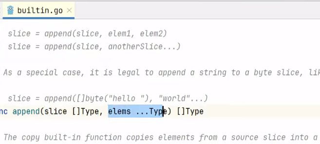

golang学习记录（7）
go中的集合类型数据结构——数组、切片（slice）、map和list
1、数组
数组的定义： var name [length] type
举个例子： var name [5] int
当中括号内没有length，就表示数组的长度是不确定的，这种数组叫做切片。
1.1、数组的基本用法
fmt.Println(name)，可以打印数组的所有元素
数组的长度是固定的
数组的遍历：
for _, value := range name{
fmt.Prinntln(value)
}1.2、数组初始化
//多种初始化方式
var name [5] int = [5]int{1, 2, 3, 4, 5}
var name = [5]int{1, 2, 3, 4, 5}
name := [5]int{1, 2, 3, 4, 5}
//只初始化部分元素
name := [3]int{2:3}
//前面的都为0，name[2] = 3
//数组的长度是不确定的
name := [...]int{1, 2, 3, 4, 5}
name := [...]int{1, 2, 3}相同类型，长度相同的数据可以相互赋值，字符串类型的可以相互比较
1.3、多维数组
//基本定义方式
var name [3][4] string
name[0] = [4]string{"a", "b", "c", "d"}
name[0][0] = "a"2、切片
切片就是没有长度的数组，切片的长度是不固定的，切片是数组的一个引用，切片是引用类型。
2.1、切片的基本用法
2.1.1、切片的定义
var name []string
fmt.Printf(%T, name)
//输出结果为[]string，本质是切片2.1.2、切片增加元素
// 使用append来增加元素，注意书写的格式
name = append(name, "a")2.2、切片的初始化
初始化一共有三种方式
1、数组直接创建
2、使用string{}
3、使用make
// 第一种
allName := [5]string{"aaa", "bbb", "ccc", "ddd", "eee"}
nameSlice := allName[0:2] // "左闭右开，包含0，不包含2"
//第二种
allName := []string{"aaa", "bbb", "ccc", "ddd", "eee"}
//在切片上也可以进行切片创建
//第三种
//第一个参数是切片的类型，第二个参数是预分配的空间（长度）
allName := make([]string, 5)2.3、切片的元素访问
allName := []string{"aaa", "bbb", "ccc", "ddd", "eee"}
sliceName := allName[start:end] //左闭右开
//如果没有end，默认是到最后一个元素
//没有start,有end，默认是从第一个元素开始到end之前的元素
//冒号一定存在2.4、切片中的省略号

再append得使用过程中，添加的元素可以是多个
可以通过直接添加元素的方式加入
也可以通过使用数组或者切片加省略号的方式加入（通过加入省略号将原来的元素打散）
// 直接列出元素的情况
name := []string{"aaa", "bbb", "ccc", "ddd", "eee"}
name = append(name, "fff", "ggg", "hhh")
// 通过切片加入的情况
name := []string{"aaa", "bbb", "ccc", "ddd", "eee"}
name2 := []string{"fff", "ggg", "hhh"}
name = append(name, name2...)
// 通过数组加入的情况
name := []string{"aaa", "bbb", "ccc", "ddd", "eee"}
name2 := [3]string{"fff", "ggg", "hhh"}
name = append(name, name2[:]...)2.5、切片的元素删除和拷贝
2.5.1、删除元素
切片的删除操作是append或者其他重新生成slice的方式进行
// 切片的删除操作
name := []string{"aaa", "bbb", "ccc", "ddd", "eee"}
// 删除一个中间的元素
newName = append(name[:2], name[3:]...)
// 删除后面的元素
newName := name[:3]
newName = append(name[:3])2.5.2、拷贝元素
拷贝也有多种方式
name := []string{"aaa", "bbb", "ccc", "ddd", "eee"}
// 第一种切片赋值
name2 := name[:]
// 第二种使用copy函数
var name3 = make([]string, len(name))
copy(name3, name)不同切片复制的方式会有不同的效果
示例如下： 
从图中可以看出，改变原来的切片，切片赋值的方式，会改变新的切片，而copy函数的方式，不会改变新的切片。
本质上是因为切片赋值的方式，是将原来的切片的地址赋值给了新的切片，而copy函数的方式，是将原来的切片的元素复制到了新的切片中（地址是新分配的）。
2.6、切片的底层存储原理
go的slice在函数参数传递的时候是值传递还是引用传递
本质上是值传递，但是呈现出引用的效果，这涉及slice的底层原理
在go中，slice的底层是一个结构体，结构体中有三个字段，分别是指向底层数组的指针，切片的长度和切片的容量
2.6.1、切片的底层结构
// slice的底层结构如下：
type slice struct {
array unsafe.Pointer //用来存储实际数据的数组指针只想一块连续的内存
len int //切片中元素的数量
cap int //array数组的长度
}2.6.2、切片的扩容机制
刚开始的时候slice会申请一个较大的容量，扩容是一个非常麻烦的过程：

扩容的时候刚开始是成倍的扩容，等到空间变大时扩容会减缓
2.6.3、切片的参数传递机制
在参数传递的时候会将原来的结构体整体复制一份，多以指向数组的指针也复制了，指针指向原来切片指向的位置
之后随着元素的加入会发生扩容，会将原来的数组复制到一个新的数组中，然后将原来的数组的指针指向新的数组，然后将原来的数组的长度和容量都改为原来的两倍。这个时候指针的位置发生变化
所以参数传递后能改变原来切片的元素，但是不能改变原来切片的长度和容量。参数传递扩容后不会改变原来切片的元素。 {: .prompt-tip }
下面是一个例子：


3、map
map是一个key-value的无序集合，主要是为了查询方便，时间复杂度为O(1)
map中的key是唯一的，value可以重复
map中key的类型可以是bool、数字、string、指针、channel、还可以是只包含前面几个类型的接口、结构体、数组，但是不能是slice、map、function，value可以是任意类型
3.1、map的基本用法
举个例子：
var courseMap map[string]string{
"courseName": "golang",
"courseType": "backend",
}
// 其中基本格式是map[key_type] value_type3.1.1、map的初始化
map类型想要使用必须先要初始化，不然map为nil(空指针)，会报错，不能使用
初始化的方式主要有两种，一种是在定义的时候直接赋值，第二种是使用make函数进行初始化，分配空间，创建一个空的map
// 第一种初始化方式
var courseMap map[string]string{
"courseName": "golang",
"courseType": "backend",
}
// 第二种初始化方式
var courseMap = make(map[string] string, 10)//make是一个内置函数
coueseMap["courseName"] = "golang"相比之下，slice可以不进行初始化
3.1.2、map获取元素
map的获取元素的方式是通过key来获取value
如果key不存在，会返回value的零值
var courseMap map[string]string{
"courseName": "golang",
"courseType": "backend",
}
fmt.Println(courseMap["courseName"])
// 第二种获取元素的方式
value, ok := courseMap["courseName"]
if ok{
fmt.Println(value)
}else{
fmt.Println("key不存在")
}
if value, ok := courseMap["courseName"]; ok{
fmt.Println(value)
}else{
fmt.Println("key不存在")
}3.1.3、map删除元素
map有一个内置的delete函数，用来删除map中的元素
如果删除的元素不存在也不会报错
delete(courseMap, "courseName")
//delete(map_name, key)3.2、map的遍历
map的遍历是通过for-range的方式进行遍历
map是无序的，所以遍历的顺序是不确定的，每次打印的顺序可能不一样
//第一种遍历方式，两个参数
for _, value := range courseMap{
fmt.Println(value)
}
// 第二种遍历方式，一个参数，key，然后通过key访问value
for key := range courseMap{
fmt.Println(key, courseMap[key])
}4、list
4.1、list的基本介绍
list是一个”双向链表”，是一个有序的集合，主要是为了插入和删除方便，利用不连续空间
list占用空间比较多，会额外存储指针，指向前后的元素
列表插入和删除比较方便，查询比较麻烦，时间复杂度为O(n)
4.2、list的基本用法
var mylist list.List
mylist.PushBack("go")
mylist.PushBack("java")
mylist.PushBack("python")
// 遍历list(正向)
for i := mylist.Front(); i!= nil; i = i.Next(){
fmt.Println(i.Value)
}
// 反向遍历
for i:= mtlist.Back(); i != nil; i = i.Prev(){
fmt.Println(i.Value)
}
mylist.PushFront("c++")//头部插入元素
mylist.PushBack("c")//尾部插入元素
mylist.InsertAfter("c#", mylist.Front())//在指定元素后面插入元素
mylist.InsertBefore("c#", mylist.Back())//在指定元素前面插入元素
mylist.Remove(mylist.Front())//删除头部元素
mylist.Remove(mylist.Back())//删除尾部元素\
mylist.Remove(i))//删除指定元素